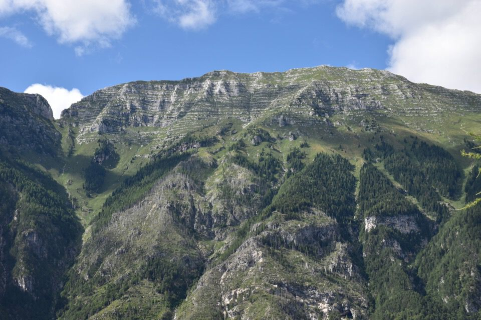

Monte assai misterioso, salito solo da pochi appassionati oltre che da cacciatori. Lunghe parti senza alcuna traccia rendono l'accesso molto difficile.
Dalla cima si gode di un panorama strepitoso: d'altronde Kugy lo diceva che i panorami migliori non li si ha dalle cime più alte ma da quelle mediane.
Alle prime luci partiamo da Piani: emblematico il profilo del Pic da qui sotto.

La val Raccolana con la sua morfologia mi piace moltissimo: erti pendii selvaggi e pieni di salti che dal basso s'innalzano verso le alte creste sommitali. Quanti sentieri e quanta storia in questi posti.

Il Sart.
Per salire allo stavolo Baba ormai è sparita ogni traccia nella parte bassa.

La vista pian piano si apre sul Cimòn e sul Pizzo Viéne; quello a dx è il livinâl di Vandûl che scende dall'omonima forca.

Bellissima la forca di Vandûl, con la ripida cresta ovest dello Zâbus che permette di realizzare l'impegnativa traversata per cresta del monte.
Laggiù Jovèt e Cjastelàt...
...con in basso il tozzo cimotto del Cuel dai Sbrici, visitato lo scorso febbraio in una bella gita con Kelen. Quella volta si voleva anche proseguire lungo il crinale, sempre più affilato, ma la cosa non ci ha convinto per nulla.


Ciò che rimane degli stavoli Baba: che luogo incredibile! Ma per capirlo bisogna andare lì.


Panoramica dalla cima: mai avrei pensato che fosse così bello! Ricordo bene l'aria primaverile: una di quelle giornate in cui non vorresti mai tornare giù.


Laggiù il bel borgo di Patoc, col monte Jama.

Il Ciùc e il Mùcul di Vallisetta.
Un rombo fortissimo ci fa gelare il sangue: una slavina che scende dal Sart!

Laggiù l'elegante forca di Vandûl con la cresta ovest dello Zâbus.
Montasio da sud-ovest.
Il rio Rosso... evidente perché si chiami così! Un po' più in sotto passa il troi dal Cuelàt, che poi taglia in traverso la pala boschiva ben visibile in foto.
Scendendo dalla cima in direzione nord per qualche minuto si arriva ad un punto d'osservazione eccezionale su Piani: mai avuta una visione così a picco!

Ah che bei posti: il Ciuc dal Corvàt con dietro il Sart.
Dev'essere facile salire il Ciuc dal Corvàt, ma di certo non con questa neve tremenda.
Verso Nevea e l'altipiano di Goriude. S'intravede il Grande Poiz per dove passa un leggendario itinerario di boscaioli, ormai pressoché scomparso, che collega Goriude col Pic di Babe.
«Storico percorso usato dalle squadre di boscaioli che da casera Guriude transitavano fin sul Pic di Babe per il taglio di grossi tronchi di larice» (info John M.).
Leggi la storia di casera Guriude, con tanto di testimonianza di Clemente Marcon, «l'uomo che aveva chiuso per l'ultima volta l'uscio durato almeno sei secoli».


In discesa canniamo di brutto scendendo per un improbabile costone, con vecchi ceppi di larice tagliati fin sull'orlo dei precipizi: e torna su per centinaia di metri.
***
Agosto 2025: ritorno sul Pic di Babe, salendo per altra via e scendendo per stavoli Baba.
È tutto bellissimo, una cengia perfetta (lavorata dall'uomo) e un ottimo sentiero, ma siamo assolutamente fuori strada, perderemo ore qui.

Il confronto con aprile scorso è pietoso: una giungla inestricabile.
Viva i selvaggi monti di Raccolana.
Zâbus: bello da sud, ma da nord è altra cosa, e noi sappiamo.
Cimòn e Zâbus: li si guarda sempre «mozzi» dai Piani del Montasio, ma così si vede solo la punta dell'iceberg ignorando cosa sta sotto. E che posti che stanno sotto! È un peccato immane che tutti i trois neris su questo intrigante versante siano stati devastati dall'incendio.
***